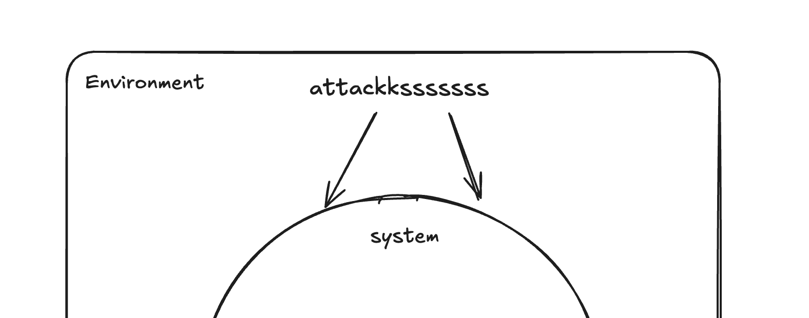
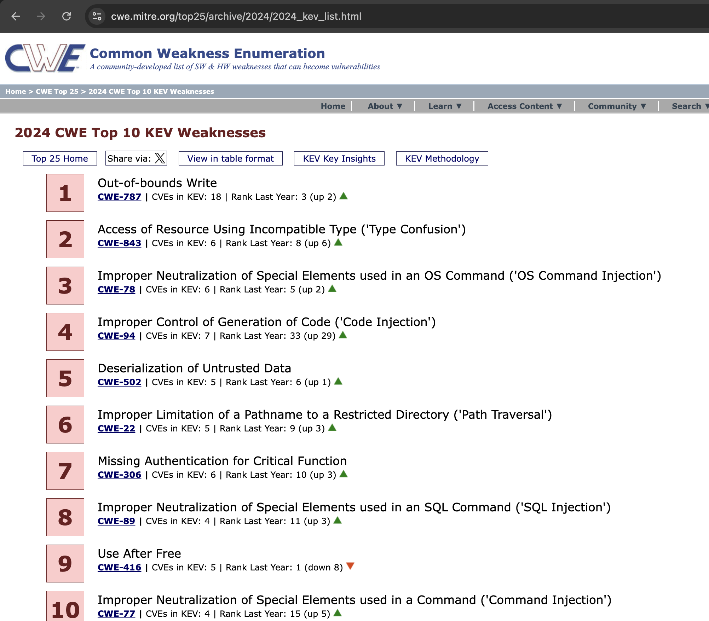

Input is Evil: Mastering the Attack Surface
If there is one mantra to keep in mind while building Secure Software, it is this: Never trust the input.
We often assume that everyone in a team should be responsible for security, but the numbers tell a different story. According to the Secure Code Warrior "State of Developer-Driven Security" report, 86% of developers do not view application security as a top priority. Most developers know security is important, but their main focus is always shipping code.
This is why, in Fall 2025 at UMD, I took a course called Introduction to Secure Coding taught by Gananand Kini. In this blog, I focus on only a small part of the whole course related to Input attacks and how to defend against them.
1. Defining the Attack Surface
If we are thinking about securing a system, first we have to define an attack surface. An attack surface consists of all the entry points and vulnerabilities an attacker can use to infiltrate a system. In simple words, it is like a house; if the house has more windows and doors, it's easier for the robber (hacker) to enter the house and steal our money (information, and even money in some cases). The larger the attack surface, the easier it is to exploit and damage the system.
Inputs come from everywhere, not just forms:
- Environment Variables: An attacker controlling environment variables.
- File Descriptors & Content: Even metadata or file names cannot be trusted.
- APIs & Sockets: Network-based inputs are classic entry points.
2. The Usual Suspects: Top Injection Flaws
The CWE Top 10 list is dominated by input validation weaknesses. In this blog, we will discuss some of them.
SQL Injection (CWE-89)
SQL injection occurs when a user is asked for an input, and instead of sending a number or string, the user provides an SQL command, and we mistakenly run it in the database.
- Example case: The infamous "Heartland Payment Systems" case, where SQL injection was used to compromise computers processing payment transactions. This resulted in the theft of as many as 100 million debit and credit cards.
-
How does SQL injection work?
A user could enter the following SQL query into an input field:
SELECT * FROM Users WHERE ID = 10 OR 1=1;Here, only one condition needs to pass for the SELECT query to run. Since 1=1 always returns true, this query will return all the users from the Users table. This is a significant problem, as the Users table might contain personal information like names, passwords, and phone numbers.
-
How to prevent it?
Mistake:
query = f"SELECT * FROM users WHERE username = '{user_input}'" session.execute(query)To fix this, we can use SQLAlchemy's ORM. In SQLAlchemy, we can use method chaining, which can parameterize the query. It treats the user input as data and not as executable code.
Fix:
stmt = select(User).where(User.username == user_input) result = session.execute(stmt)
Cross-Site Scripting (CWE-79)
In theory, web browsers use something called the same-origin policy; this keeps different sites away from each other and does not allow one site to access objects or credentials from another site. However, hackers can trick the site into executing malicious code within its own context, as though it were same-origin. This is Cross-Site Scripting.
- Example case: As a Fortnite player myself, it's quite disheartening to see that the game you love could have been attacked by hackers. In 2019, while the game was at its peak with 200 million users, they had a retired page that had an XSS vulnerability that allowed attackers to gain unauthorized access to the data of all Fortnite users. This was discovered by security researchers from Check Point, hence saving my data (and my precious V-Bucks) from getting stolen.
How do we prevent it?
Mistake:
# Never render user input directly without escaping it first!
# If user.name is "<script>alert(1)</script>", this runs it.
return f"<h1>Welcome back, {user.name}!</h1>"
Fix:
import html
# Modern templating engines do this automatically, but manually:
safe_name = html.escape(user.name)
return f"<h1>Welcome back, {safe_name}!</h1>"
Path Traversal (CWE-22)
This is also known as the "Dot-Dot-Slash" attack.
Imagine you go to a library and ask the librarian for a book. You say, "I'd like 'Harry Potter', please." The librarian goes to the shelf and hands it to you. Normal, right?
Now, imagine you say, "I'd like '.. / .. / .. / private-office / safe-combination.txt'." If the librarian were a computer, they might literally walk out of the book section, go up the stairs into the manager's office, and hand you the secret file. That is Path Traversal.
How do we prevent it?
Attackers use `../` to climb up and out of the directory you intended them to stay in.
Mistake:
filename = request.args.get('file')
# DANGEROUS: If filename is "../../etc/passwd", you just leaked system passwords.
with open(f"/var/www/uploads/{filename}", "r") as f:
return f.read()
Fix:
import os
filename = request.args.get('file')
# This strips any path info. "../../etc/passwd" becomes just "passwd"
safe_filename = os.path.basename(filename)
with open(f"/var/www/uploads/{safe_filename}", "r") as f:
return f.read()
Conclusion
A very simple conclusion: Never trust the input.